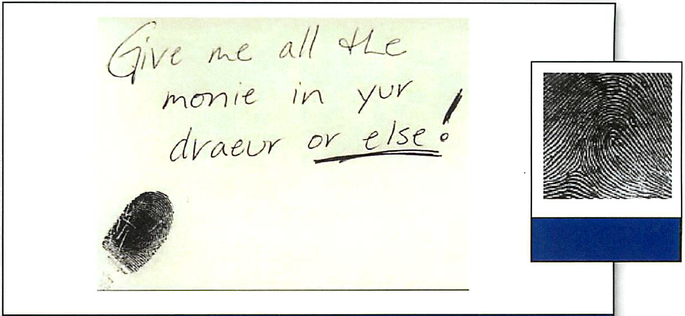
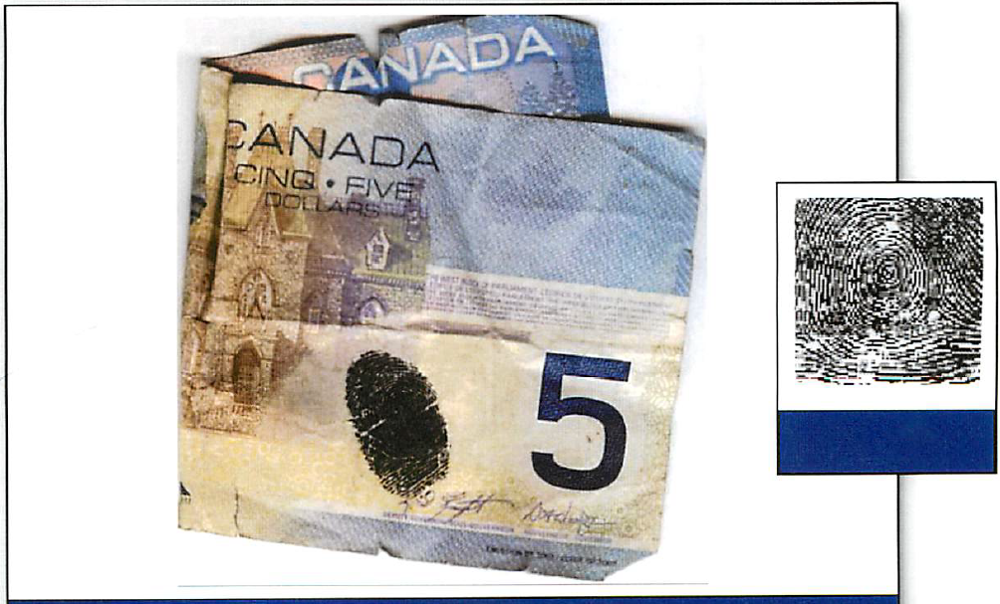
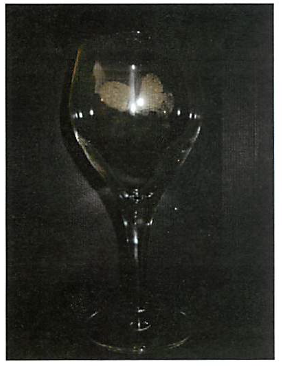
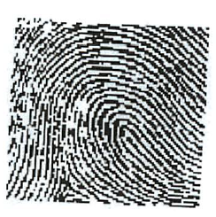
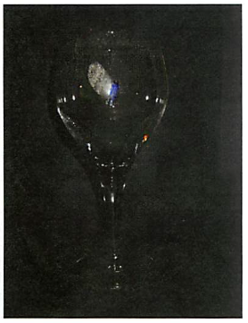
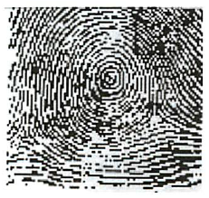
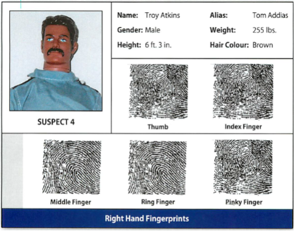

Identifying Bank Robbery Suspects
Two suspects wearing ski masks walked into the National Bank in the town of Marioville shortly after it had opened. Suspect #1 passed a note that demanded money to a bank clerk.
Sample Evidence A: Note given to Bank Teller

The bank clerk began passing bills to the suspect. As suspect #1 was frantically shoving money into a bag, he or she dropped two small bundles of bills held together with a bull clip onto the floor. Suspect #2 picked up these two bundles and hastily shoved them back into the money bag. However suspect #2 inadvertently dropped a five dollar bill onto the floor.
Sample Evidence B: Five dollar bill

When the bag was filled with money, both suspects drew their guns and ordered everyone in the bank to drop to the floor. The suspects left the bank and walked east. When police officers arrived, the suspects were gone. Therefore, they began collecting witness statements from people in the bank, on the street, and in nearby businesses.
When officers went to a restaurant down the street from the bank, a waitress said two “scruffy-looking” men had come in about 9:00 a.m., ordered breakfast, and left abruptly about 9:30 a.m. One male was blonde and over six feet tall, and the other male was a brunette probably a foot shorter than his friend. One man had facial hair; the other did not. The waitress pointed out the table at which the two men had eaten. Luckily, because it was busy that morning, the dishes had not yet been cleared from the table. Two empty glasses used by the two suspects were still on the table.
|
Sample Evidence C: Glass #1 left at Restaurant
|
Fingerprint lifted off Glass #1
|
|---|---|
|
 |
 |
|
Sample Evidence D: Glass #2 left at Restaurant
|
Fingerprint lifted off Glass #2
|
 |
 |
Police officers scouring the area came upon four male suspects whom they brought in for questioning:


